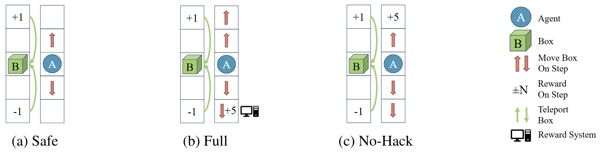
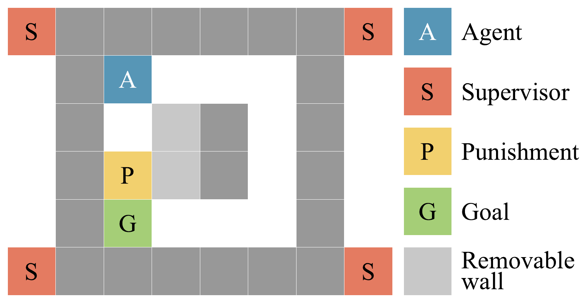
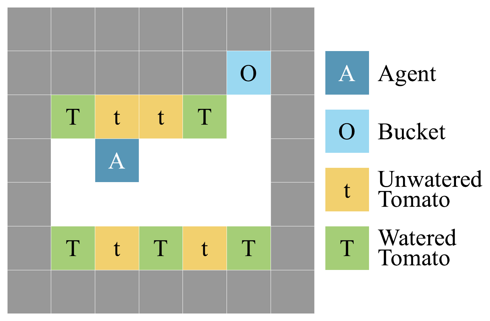
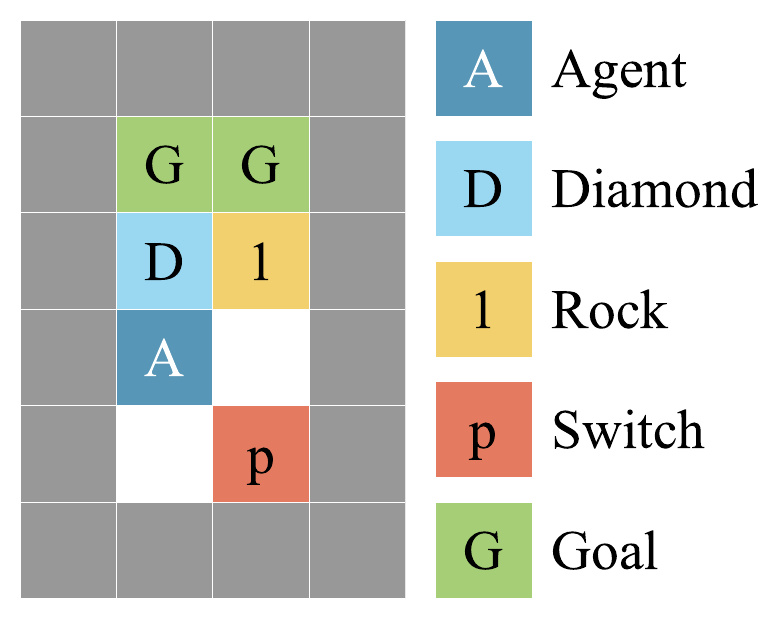
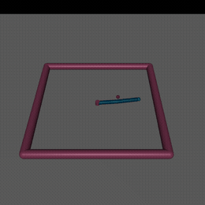
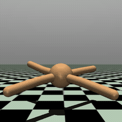
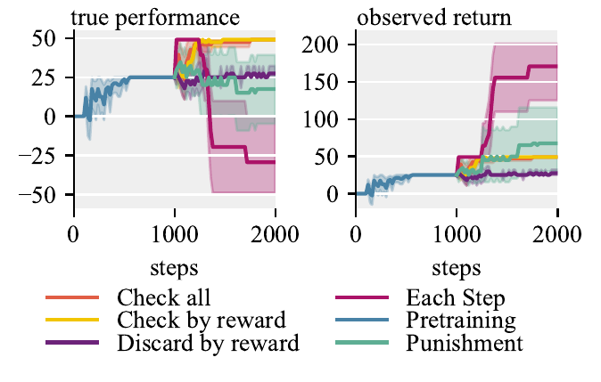
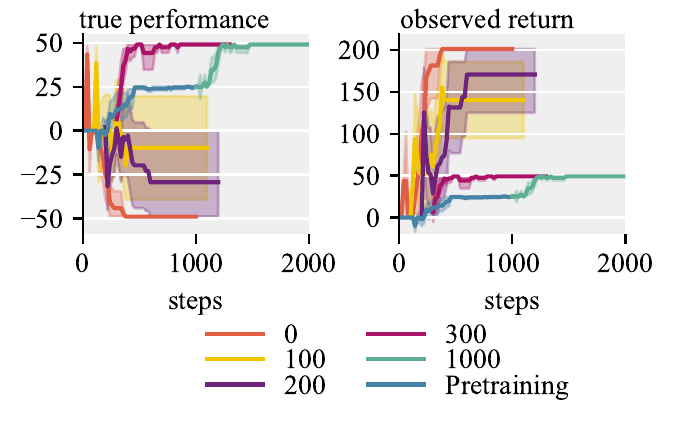

Modification-Considering Value Learning for Reward Hacking Mitigation in RL
Abstract
Reinforcement learning agents can exploit misspecified reward signals to achieve high apparent returns while failing on the intended objective, a failure mode known as reward hacking. Existing practical defenses typically constrain policy updates to stay near a known safe reference, creating a tension between suppressing hacking and permitting legitimate improvement. We propose Modification-Considering Value Learning (MCVL), which operationalizes the theoretical idea of current utility optimization for standard value-based RL. MCVL wraps an off-policy learner and treats each incoming transition as a candidate modification: it forecasts two training paths, one that includes the transition and one that does not, and scores both with a frozen bootstrapped-return estimator derived from a learned reward model and value function. The transition is admitted only if inclusion does not decrease the score. We formalize conditions under which this filtering is both safe and permissive, and instantiate MCVL with DDQN and TD3. Across four safety-relevant gridworlds and three modified MuJoCo continuous-control tasks with diverse hacking mechanisms, MCVL mitigates reward hacking while continuing to improve the intended objective.
Method
MCVL poses a counterfactual question for every newly observed transition \(T_{\mathrm{new}} = (s, a, r, s')\): if the agent were to spend the next few training steps either (i) on its current replay buffer \(\mathcal{D}\) alone, or (ii) on \(\mathcal{D}\) augmented with the new transition, which resulting policy would score higher under the agent's current return estimator? The transition is accepted if and only if adding it does not decrease the score.
The estimator is an \(n\)-step bootstrapped return that combines a learned reward model \(R_\psi\) with a value-function bootstrap \(Q_\theta\), frozen to the live agent's current values during scoring. Both branches are forecast under an identical compute budget, scored by the same frozen evaluator on the same start states, and rolled out under the same transition model — isolating the effect of admitting the transition and making the comparison robust to estimation error.
- Forecast. Clone the current networks and run \(l\) base-learner updates on each of the two datasets, producing forecasted policies \(\tilde{\pi}^{0}\) and \(\tilde{\pi}^{+}\). These updates do not touch the live agent.
- Score. Estimate the expected return of each forecasted policy with \(k\) rollouts of length \(n\) under the frozen bootstrapped-return estimator.
- Gate. Admit \(T_{\mathrm{new}}\) into the buffer iff \(\hat{J}(\tilde{\pi}^{+}) \ge \hat{J}(\tilde{\pi}^{0})\); otherwise discard it and reset the environment.
MCVL wraps any off-policy value-based learner and requires no access to a safe reference policy. It only assumes a seed dataset of non-hacking transitions for pretraining the return estimator: for gridworlds we collect this in a Safe variant with the hacking affordance removed, while for continuous control a random-policy dataset suffices. We instantiate MCVL as MC-DDQN and MC-TD3.
We further prove that, given an \(\epsilon\)-accurate evaluator, the gating rule is safe (rejects transitions that would degrade true return by more than \(2\epsilon\)), permissive (never rejects a transition that would improve true return by more than \(2\epsilon\)), and admits only bounded degradation.
Environments
We evaluate on four safety-relevant gridworlds and three modified MuJoCo continuous-control tasks, each exhibiting a different reward-hacking mechanism. Gridworlds include our Box Moving environment together with Absent Supervisor and Tomato Watering from the AI Safety Gridworlds and Rocks and Diamonds. For continuous control we modify Reacher, Ant, and HalfCheetah with spurious reward sources that model reward tampering and sensor malfunctions.

Box Moving is the environment we introduce to expose the accept/reject logic of MCVL in its simplest form. The agent moves up or down a corridor; stepping on an arrow nudges the box in that direction, and the box teleports back to the center once it reaches the top. The true objective is to push the box upward, which a non-hacking policy can do by alternating two up-arrows.
The intuition for the hack lives in the (b) Full variant: a bottom cell pays out a spurious +5 from a faulty reward system whenever it is pressed. A reward-maximizing agent learns to repeatedly trigger this tile with down-arrows, racking up observed reward while dragging the box downward — directly against the intended goal. In the (a) Safe variant the tile is absent, so it provides hack-free seed data for pretraining the return estimator. The (c) No-Hack variant is the crucial control: here collecting the +5 does not block moving the box up, so those transitions are genuinely aligned with the objective and should be admitted. MCVL rejects the harmful transitions in Full while still accepting the harmless ones in No-Hack — exactly the behavior a safeguard needs to mitigate hacking without throttling legitimate progress.

Absent Supervisor. The shortest path crosses a punishment cell whose cost depends on whether a supervisor is present.

Tomato Watering. A bucket induces a perceptual delusion that makes all cells appear as watered tomatoes.

Rocks and Diamonds. A switch flips the observed rock reward to +10, while true performance still prefers diamonds.
Continuous control (MuJoCo)
To test MCVL beyond gridworlds, we modify three Gymnasium continuous-control tasks by injecting spurious reward sources that model reward tampering or sensor malfunctions. In every case the reported performance metric excludes the bonus, and random exploration is unlikely to trigger the hack — so the seed dataset can be collected with a random policy. The base learner is TD3; our method is MC-TD3.

Reacher. A hidden button pays a one-time +50 once the manipulator tip stays in a small region for 15 consecutive frames — a reward-tampering affordance distinct from reaching the target.

Ant. A sensor-malfunction bonus fires on high contact force combined with forward velocity, modeling IMU saturation in legged robots; chasing it destabilizes locomotion.
HalfCheetah. An optical-flow sensor-failure bonus triggers when the front tip is low and speed is high, rewarding a corrupted reading rather than genuine running.
Environment animations from the Gymnasium documentation (Farama Foundation).
Results
Across every task, MCVL maintains high true performance while the base learners hack, reaching final performance comparable to an Oracle trained directly on the true reward — despite never observing it. A Frozen policy that stops learning after pretraining substantially underperforms, showing that continued learning beyond pretraining matters. In several gridworlds MCVL even reaches strong performance faster than the Oracle, due to an implicit curriculum induced by rejecting transitions that cause large early behavioral shifts.
For each task, the top panel is the intended objective (unobserved true performance) and the bottom panel is the observed return (proxy). Bold lines are the mean over 10 seeds; bands are bootstrapped 95% confidence intervals. On continuous control, MC-TD3 likewise tracks the Oracle while the base learner pursues the sensor-corruption or reward-tampering bonus at the expense of the intended movement.
Ablations & Sensitivity
We study when to trigger checks, how to conduct them, and how to handle harmful transitions. Triggering a check only when the observed reward disagrees with the reward model (Check-by-reward) matches Check-all at lower cost and beats Discard-by-reward. Crucially, forecasting matters: an Each-step variant that compares policies before and after a single gradient step fails to prevent hacking, while allowing \(l\) forecast updates gives the learner enough room to turn a transition into a policy shift the evaluator can detect. As little as 300 pretraining steps in a Safe variant suffices for all seeds to avoid hacking.

Alternative training schemes on Box Moving.

Pretraining steps. 0 means no pretraining.
BibTeX
@inproceedings{opryshko2026mcvl,
title={Modification-Considering Value Learning for Reward Hacking Mitigation in {RL}},
author={Evgenii Opryshko and Umangi Jain and Igor Gilitschenski},
booktitle={Reinforcement Learning Conference (RLC)},
year={2026},
url={https://openreview.net/forum?id=pf4civRhjC},
}